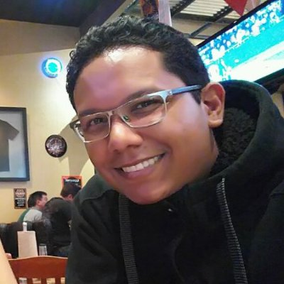

Technologist focused on agentic development, AI-assisted workflows, and building systems that help teams move faster without losing rigor. I thrive on solving complex problems, turning ambiguity into practical, high-impact solutions with a strong bias for learning, experimentation, and results. I balance cost-efficiency with bold investment when the opportunity warrants it, always aiming for the highest leverage path. Known for a collaborative, no-blame approach, I enjoy aligning people, processes, and technology to drive execution, share knowledge, and create lasting impact in the community.

Systems thinking, no-blame execution, strong collaboration, and practical iteration.
What I optimize for
Designing human-in-the-loop workflows where agents increase output without eroding trust, judgment, or auditability.
Helping teams turn ambiguity into momentum through clear priorities, collaborative execution, and calm systems thinking.
Shipping backend, infrastructure, and security improvements that keep ambitious product bets grounded in operational rigor.
Balancing cost discipline with bold investment when the leverage is real and the user outcome is worth compounding.
As a Director of Software Engineering, I've been in charge of:
As an Associate professor I've been teaching differents lectures, like the following:
Lead developer for the dev-team at Balboa Developers. We mainly focus on building decentralized applications on top of ethereum network.
Technologies used:
Head of development for new projects that the company programmed for different customers in Panamá.
Technologies used:
Development of new features and maintaining the backend code of https://goread.com which is written mainly in Django/Python. I also handle deployment process of the staging servers which are base on Linux.
Technologies used:
Analyze, design, develop and maintain a backoffice (Software for the administration of a gas station) that connects to Verifone Equipment like Sapphire and Ruby extract the information of the sales and save them into a database. It is developed for some oil companies located on Central America.
Techonolies used:
Co Founder of DoorRide. Startup winner of a contest organized by the Innovation Center of Panama and the U.S. Embassy of Panama, called "Ideas Jóvenes Panamá", in which participated more than 80 startups ideas from Panama.
DoorRide is a platform that aims to connect people or companies that want to make deliveries (Curriers companies, individuals, etc), with people that want to have a package delivered, in an easy and safe way.
The prize was to go to United States and participate in a program of the U.S. Department of State, called IVLP. The main objective of the program, was meet people from different areas of business, from technology and academic people to investors, that criticized our startup giving us from their perspective and expertise what were the weakness and the strengths of it.
After all the meetings, all the Co Founders decided to leave the project in stand by in order to make pivot the original idea, using all the feedback received.
I was part of a program of coaching about entrepreneurship and startups, meeting with academic institutions and private business to receive feedback about our startup idea, DoorRide.
Administration and firewall monitoring, updates of users and active directory policies, penetration testing, updates of the security policies.
Theoretical and Practical project called: "Reforzamiento de la infraestructura de red y estándares de seguridad de la información dentro de Ximark technologies"
In charge of the management of all the multimedia equipment of the Laboratories of the Computer Science Faculty of the Technological University of Panama.
Trainer of "Introduction to the information technology". It was a program from the Technological University of Panama to make old professors learn the basics of the Information Technologies. My duty was to train people on the basics of using Microsoft Windows, and Word, Excel, Powerpoint and Outlook.
Trainer of "Massive Training in the basics of Information Technologies for the people of Social Security". It was a program from the Social Security of Panama. My duty was to train people on the basics of using Microsoft Windows, and Word, Excel, Powerpoint and Outlook.
Point of view
Agents should extend judgment, not hide it.
Reliability compounds faster than novelty when teams are shipping for real users.
Great execution comes from aligning people, process, and tooling — not blaming the last failure.
AI-native delivery works best when experimentation stays measurable, reversible, and production-minded.
Open to conversations about agentic product systems, engineering leadership, secure platforms, and AI-assisted delivery.
Typical ways I help:
Drop me a line at erick@agrazal.com or call me at +507-6788-8134